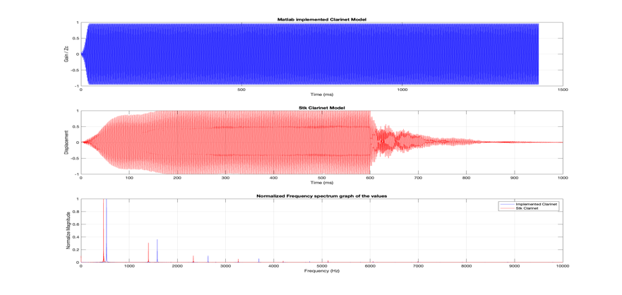
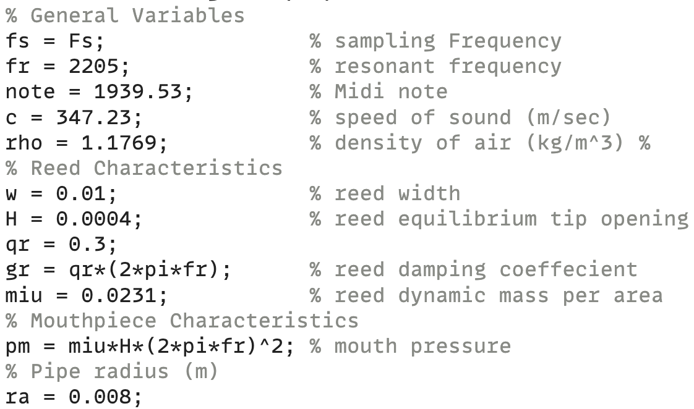
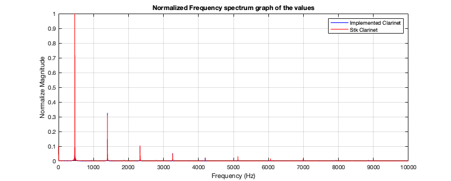

Next: Conclusion Up: Main Previous: Method

Matlab version
Stk version
To obtain the resulting clarinet model, the parameter values used are:

To obtain a more natural sound, an envelope is applied to the mouth pressure values ramping it from 0 to $\mu H\left( 2\pi f_{r} \right)^{2}$ in approximately 100 milliseconds. Noise and vibrato are also added for similar reasons.
By changing the variables $H,\mu$ it affects the rate at which the resulting pressure will ramp but beware that it will also affect the upper harmonics of the sound. Reducing $H$ will reduce $u_{0}$ which leads to a reduction of $p_{\Delta}$ which results in a removal of energy in the higher harmonics due too the reed filter. Inversely, increasing the reed's dynamic mass per area will have the same effect as $H$ as it affects the numerator of the filter, $\frac{4z^{- 1}}{\mu_{r}}$.
To have the clarinet model play non-integer-based frequencies and compare it properly with the stk toolkit version, I implemented an interpolated delay line.
With some tunning of the note's frequency, I was able to line up the sounds rather well resulting in:

As we can see in figure 11 and 12, the frequency responses resemble, however the resulting sounds differ in their amplitude envelope. The amplitude variation in the stk model is most likely due to the applied reverb, a ramped down envelope, and the difference in reed models. When attempting to apply a downwards ramping envelope on the mouth pressure in my model, it created issues with the filters returning imaginary numbers and blowing up the values. Hence why there is only an envelope on the upwards motion.

|
|
| Made by Maxwell Gentili-Morin. |